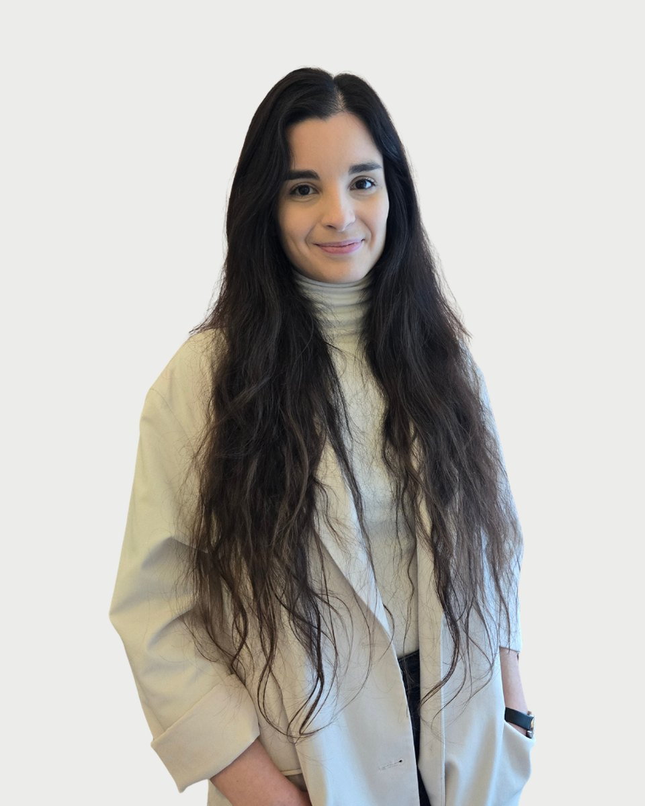

Regiszter 14 · Pszichológus
Hidvégi
Dorottya

Amiben segítek
- Párkapcsolati nehézségek, párterápia
- Családi nehézségek, családterápia
- Önismeret
- Önbizalomhiány, önértékelési nehézségek
- Életvezetési elakadások
- Szorongás
- Stresszkezelés, feszültségoldás
- Pánik
Rólam
Pszichológus diplomámat az Eötvös Loránd Tudományegyetem klinikai- és egészségpszichológia specializáción szereztem. Jelenleg család- és párterápiás módszertannal bővítem tudásomat, mivel fontosnak tartom, hogy a nehézségeket ne csak egyénileg, hanem a kapcsolataink és környezetünk szempontjából is megértsük.
Munkám során mindig arra törekszem, hogy a hozzám fordulók ne csupán szakmai segítséget kapjanak, hanem egy empatikus, támogató teret is, ahol bátran szembenézhetnek a kihívásaikkal. A közös munka során partnerként tekintünk egymásra: együtt dolgozunk a kitűzött célok elérésén, melynek fókuszában az áll, hogy feltárjuk az elakadás okait és felfedezzük azokat a belső erőforrásokat, amelyek segíthetnek a nehézségek leküzdésében és a fejlődés elérésében.
A konzultációk során mindig a tisztelet, a bizalom és az őszinte támogatás vezérel.
Carl Rogers, "A feltétel nélküli elfogadás a legnagyobb élmény, amelyet egy ember átélni képes."
Hidvégi Dorottya díja 15-20 ezer forint alkalmanként.
Képzés és szakmai út
A képzések és a szupervízió az akkreditált szakképzőhely rendjében folynak. Mit jelent ez Önnek
Szakmai tapasztalat
• Pszichológus (2025 szeptember, 2026 február) Finomhangoló Műhely, ARFID-intervenció
• Pszichológus (2025 január, 2026 február) Tabuk Villája, egyéni tanácsadás
• Pszichológus (2025 május, 2025 augusztus) Panoráma Poliklinika, ARFID-intervenció
Iskolai végzettség
2021, jelenleg
• Magyar Családterápiás Egyesület: család- és párterápiás módszerspecifikus képzés
2023, jelenleg
• ELTE Pszichológiai Doktori Iskola, Klinikai pszichológia és addiktológia program
2021-2023
• ELTE PPK Pszichológia mesterképzés
2017-2021
• ELTE PPK Pszichológia alapképzés
Tanítómesterek
Akiknél a módszereket tanulta
- Demetrovics Orsolya, Gyermek- és ifjúsági mentálhigiénés és klinikai szakpszichológus, családterapeuta, személyközpontú tanácsadó pszichológus
- Kozma-Vizkeleti Dániel, Kiképző család-pszichoterapeuta, klinikai szakpszichológus, pszichoterapeuta
- Akik a leginkább inspirálnak:
- Carl R. Rogers amerikai pszichológus, a személyközpontú pszichoterápia megalkotója
- Irvin D. Yalom egzisztenciális pszichiáter
Időpont Hidvégi Dorottyanál
Az ügyfélszolgálat hétköznap 9 és 15 óra között egyeztet. Ha bizonytalan, hogy Ön kihez tartozik, azt is megbeszéljük.
Hasonló területen dolgoznak
Három kolléga, akinek a szakterülete a legközelebb áll Hidvégi Dorottya munkájához.